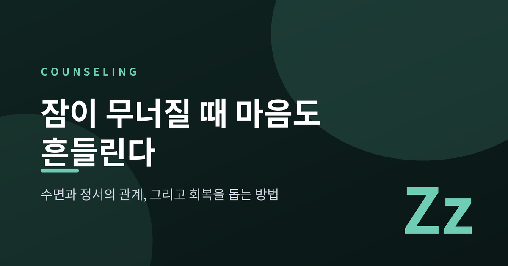
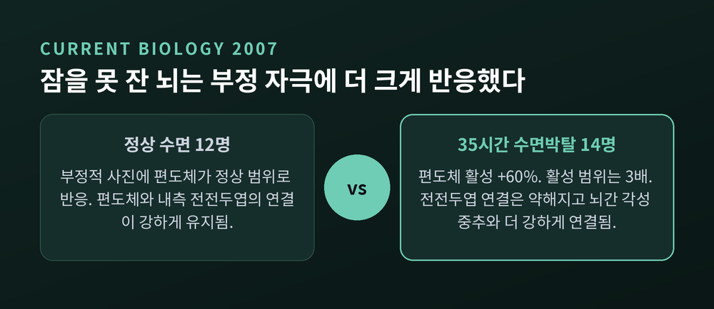
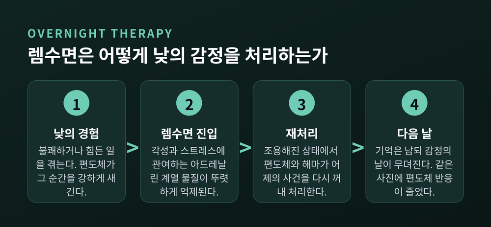
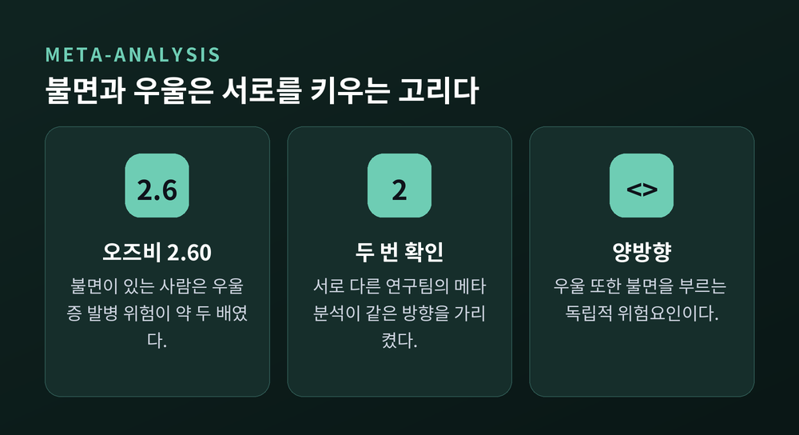
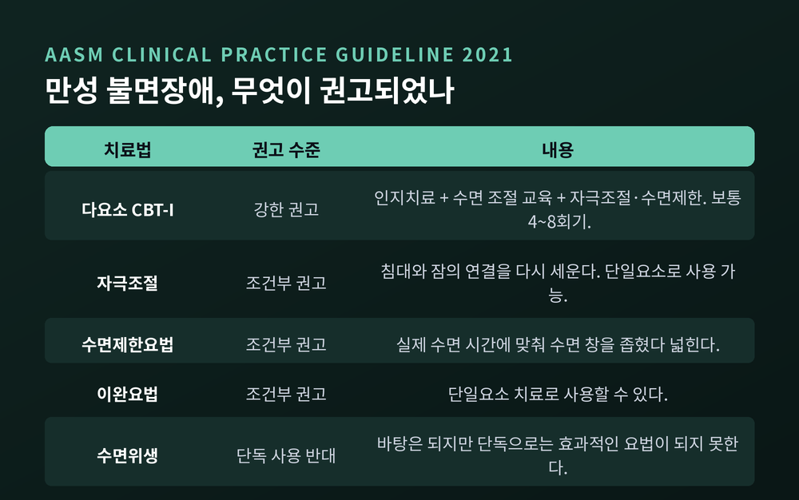
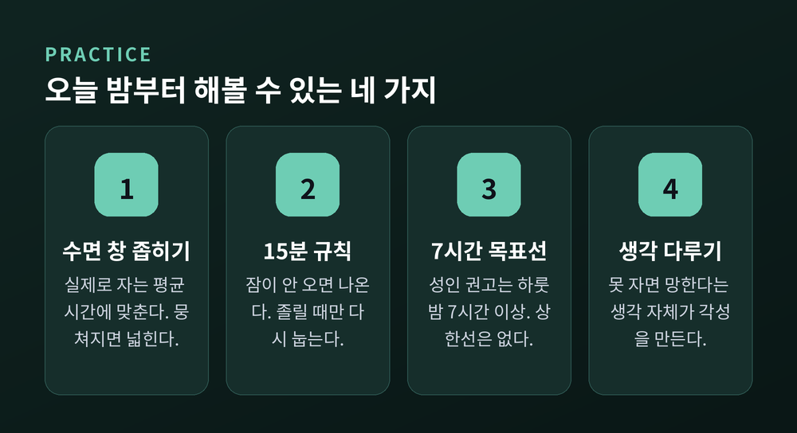
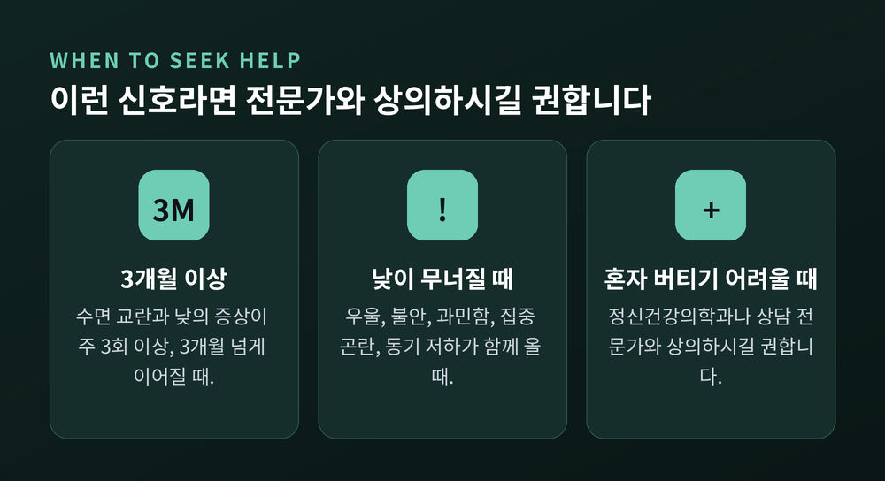

수면과 정서의 관계, 잠이 무너질 때 마음이 흔들리는 이유와 회복법

이번 글에서는 수면과 정서의 관계를 정리해 보겠습니다. 잠이 부족할 때 왜 사소한 일에 마음이 크게 흔들리는지, 그리고 근거가 확인된 회복 방법은 무엇인지 함께 살펴보려 합니다.
먼저 결론부터 세 줄로 말씀드립니다. 잠이 부족하면 감정을 처리하는 뇌 회로의 브레이크가 헐거워집니다. 불면과 우울은 서로를 키우는 양방향 관계입니다. 그리고 이 고리를 끊는 데 가장 강하게 권고되는 방법은 약이 아니라 불면증 인지행동치료(CBT-I)입니다.
하룻밤을 못 잤을 뿐인데, 감정이 커집니다
2007년 하버드 의대와 UC 버클리 연구진이 발표한 실험이 있습니다.
건강한 성인 26명을 두 집단으로 나눴습니다. 열네 명은 약 35시간 동안 깨어 있었고, 열두 명은 집에서 평소처럼 잤습니다. 다음 날 같은 시각에 두 집단 모두 fMRI 안에서 사진 100장을 봤습니다. 중립적인 사진부터 점점 불쾌한 사진까지 순서를 섞어 보여주는 과제였습니다.
결과는 분명했습니다.
잠을 자지 못한 집단은 부정적인 사진을 볼 때 편도체 활성이 60% 더 크게 나타났습니다. 활성화된 편도체의 범위는 세 배로 넓어졌습니다. 편도체는 위협과 불쾌를 감지하는 부위입니다.
흥미로운 건 그다음입니다. 중립적인 사진에서는 두 집단의 차이가 거의 없었습니다. 즉 잠이 부족한 뇌가 모든 것에 들뜬 게 아니라, 부정적인 자극에만 유독 크게 반응한 것입니다.

연결 상태를 보면 이유가 보입니다.
잠을 잔 집단은 편도체와 내측 전전두엽의 연결이 강했습니다. 전전두엽은 편도체를 위에서 눌러 주는 역할을 합니다. 반대로 잠을 못 잔 집단은 그 연결이 약해진 대신, 편도체가 뇌간의 각성 중추와 더 강하게 이어져 있었습니다.
브레이크는 헐거워지고 가속페달은 밟혀 있는 상태인 셈입니다.
연구진의 표현을 빌리면, 하룻밤의 잠은 이 회로의 온전함을 지킴으로써 다음 날의 감정 반응을 '리셋' 합니다.
다만 연구진 스스로 한계를 적어 두었습니다. 참가자들이 계속 깨어 있으면서 생긴 생체리듬 변화가 결과에 얼마나 영향을 줬는지는 알 수 없다고 말입니다. 저도 이 점은 그대로 전해 드리는 것이 맞다고 생각합니다.
잠은 기억을 지우지 않고, 감정의 날을 무디게 합니다
같은 연구실이 2011년에 후속 연구를 내놨습니다.
참가자 34명에게 정서적인 사진 150장을 보여주고 강도를 평정하게 했습니다. 그리고 12시간 뒤에 똑같이 한 번 더 했습니다. 어떤 사람은 그사이 하룻밤을 잤고, 어떤 사람은 낮 동안 깨어 있었습니다.
잠을 잔 쪽에서만 편도체 활동이 줄었습니다. 주관적으로 느끼는 감정의 강도도 함께 낮아졌습니다. 깨어 있던 쪽에서는 그런 감소가 관찰되지 않았습니다.
기전으로 지목된 것은 렘(REM) 수면입니다.
렘수면 동안에는 각성과 스트레스에 관여하는 아드레날린 계열 신경전달물질이 뚜렷하게 억제됩니다. 그 조용한 상태에서 편도체와 해마 네트워크가 낮에 겪은 일을 다시 꺼내 처리합니다. 스트레스 화학물질이 빠진 방에서 어제 일을 다시 재생하는 셈입니다.

연구자들은 이것을 "하룻밤의 치료"라고 불렀습니다.
이 표현에서 중요한 건 잠이 기억을 지우지 않는다는 점입니다. 무슨 일이 있었는지는 그대로 남습니다. 다만 그 일에 붙어 있던 감정의 날카로움이 밤을 지나며 무뎌집니다.
그러니 잠이 무너지면 이 처리 공정이 멈춥니다. 어제의 감정이 오늘로, 오늘의 감정이 내일로 그대로 넘어옵니다. 쌓인 감정이 무거워지는 게 아니라, 정리되지 않은 채 그대로 남는 것입니다.
2024년에 나온 연구에서도 하룻밤을 못 잔 상태가 정서적 갈등을 해소하는 능력을 방해한다는 결과가 확인됐습니다. 방향은 같습니다.
불면과 우울은 한 방향이 아닙니다
여기서 자연스럽게 따라오는 질문이 있습니다. 그렇다면 잠이 부족한 상태가 오래가면 어떻게 되는가.
2011년에 나온 종단 역학연구 메타분석이 답의 일부를 줍니다. 불면증이 있는 사람이 나중에 우울증을 겪을 오즈비는 2.60이었습니다. 우울하지 않던 사람 중 불면이 있는 사람은, 수면에 문제가 없는 사람보다 우울증 발병 위험이 약 두 배였다는 뜻입니다.
이상치를 빼도 수치는 여전히 높았습니다. 2016년의 다른 메타분석에서도 같은 방향의 결과가 나왔습니다. 서로 다른 연구팀이 각각 확인했다는 점이 이 사실의 무게를 더합니다.

다만 방향은 하나가 아닙니다.
불면은 우울의 독립적 위험요인이고, 우울 또한 불면을 부르는 독립적 위험요인입니다. 둘은 원인과 결과로 깔끔하게 나뉘지 않습니다. 서로를 키우는 고리에 가깝습니다.
이 점이 오히려 희망적인 대목이기도 합니다. 고리라면, 어느 한쪽을 건드려도 전체가 움직일 여지가 생기니까요.
한 가지는 분명히 해 두겠습니다. "잠 때문에 우울해진다"고 단정할 수 있는 단계는 아닙니다. 2007년 연구진도 인과 해석에 대해서는 스스로 '사변적'이라는 단어를 썼습니다. 여기서 말할 수 있는 것은 강한 연관이지, 확정된 인과가 아닙니다.
한국의 밤은 지금 어떤 상태인가
국내 통계를 보겠습니다.
건강보험심사평가원 자료에 따르면 2025년 수면장애로 진료와 처방을 받은 환자는 134만 9,039명이었습니다. 2021년에는 108만 1,228명이었습니다. 5년 사이 약 25% 늘었습니다.
만성 불면장애는 성인 인구의 약 10%에 영향을 미친다고 미국수면의학회는 밝히고 있습니다. 진료를 받은 사람만 센 숫자가 저 정도라는 뜻입니다.
치료의 무게중심에도 변화가 보입니다.
예전엔 잠이 안 오면 약이 거의 유일한 선택지처럼 여겨졌습니다. 지금은 비약물 치료가 함께 이야기됩니다. 국내에서도 2023년에 불면증 디지털 치료기기 두 종이 식약처 허가를 받았습니다. 그중 하나는 수면 제한, 자극 조절, 이완 요법 같은 인지행동치료 프로그램을 스마트폰으로 구현한 것입니다.
이해국 가톨릭대 정신의학과 교수는 언론 인터뷰에서 이렇게 말했습니다. "졸피뎀은 효과가 빠른 만큼 장기적으로는 환자의 심리적 의존도를 높인다." 그리고 비약물적 치료를 통한 수면 습관 교육과 모니터링이 중요하다고 덧붙였습니다.
오해가 없도록 적어 둡니다. 약이 나쁘다는 이야기가 아닙니다. 약의 복용이나 중단은 처방한 의사와 상의할 일이지, 블로그 글이 정할 문제가 아닙니다.
수면위생은 치료가 아니라 바탕입니다
미국수면의학회는 2021년에 만성 불면장애의 행동·심리 치료 지침을 발표했습니다. GRADE 방법론으로 평가한 첫 체계적 고찰이었습니다.
이 지침에서 강한 권고는 단 하나였습니다. 다요소 불면증 인지행동치료, 곧 CBT-I입니다. 임상의가 대부분의 상황에서 따라야 하는 수준의 권고입니다.
CBT-I는 인지치료 전략에 수면 조절 교육, 그리고 자극조절과 수면제한 같은 행동 전략을 결합한 것입니다. 보통 4~8회기로 진행됩니다.

같은 지침에서 눈에 띄는 대목이 하나 더 있습니다.
수면위생을 단독 치료로 쓰지 말 것을 제안한다는 항목입니다. 주저자인 잭 에딩거는 이렇게 설명했습니다. 수면위생은 흔히 권고되고 환자들도 잘 이해하지만, 그것만으로는 효과적인 단독 요법이 되지 못한다고 말입니다.
카페인을 줄이고 방을 어둡게 하는 일이 쓸모없다는 뜻이 아닙니다. 그것은 바탕이지 치료가 아니라는 뜻입니다. 바닥을 고르는 일과 집을 짓는 일은 다릅니다.
효과 근거는 여러 집단에서 쌓였습니다. 청소년 대상 메타분석에서 불면 증상, 입면 시간, 총 수면시간, 수면효율이 모두 유의하게 개선됐습니다. 고령자 대상 메타분석에서도 같은 지표들이 개선됐습니다. 우울증을 함께 겪는 불면 환자에게서는 불면과 우울 양쪽이 나아졌습니다.
약물 지침 쪽도 방향이 같습니다. 만성 불면장애의 약물은 CBT-I에 참여하기 어려운 경우, CBT-I 후에도 증상이 남은 경우, 일시적 보조가 필요한 경우에 주로 고려하도록 되어 있습니다.
오늘 밤부터 해볼 수 있는 것들
지침의 구성요소를 일상의 언어로 옮겨 보겠습니다.
첫째, 침대에 있는 시간을 오히려 줄여 봅니다.
수면제한요법의 핵심입니다. 자고 싶은 시간이 아니라 실제로 자는 평균 시간에 맞춰 잠자리에 있는 시간을 일시적으로 좁힙니다. 잠이 한 덩어리로 뭉쳐지기 시작하면 그때 조금씩 넓혀 갑니다. 항상성 수면 압력을 키우고 생체리듬을 안정시키는 원리입니다. 일찍 누워 오래 버티는 방식이 왜 잘 안 되는지가 여기서 설명됩니다.
둘째, 15분 규칙을 지켜 봅니다.
자극조절의 핵심입니다. 누웠는데 잠이 오지 않고 답답하다면, 15~20분쯤 지나 침대에서 나옵니다. 자극이 적은 일을 하다가 졸릴 때만 다시 눕습니다. 불면이 길어지면 뇌가 침대를 '자는 곳'이 아니라 '뒤척이며 걱정하는 곳'으로 학습합니다. 그 연결을 다시 세우는 작업입니다.
셋째, 7시간을 목표선으로 둡니다.
미국수면의학회와 수면연구학회가 전문가 15인의 합의 패널을 꾸려 12개월간 검토한 결과입니다. 성인은 하룻밤 7시간 이상 자기를 권고합니다. 6시간 이하는 건강과 안전을 지키기에 불충분하다고 보았습니다. 상한선은 따로 두지 않았습니다.

넷째, 잠에 대한 생각을 함께 다룹니다.
"오늘도 못 자면 내일이 다 망한다"는 생각이 밤마다 자동으로 켜진다면, 그 생각 자체가 각성을 만듭니다. 인지 재구성이 다루는 부분이 이 지점입니다.
혼자 해 보실 만합니다만, 한계는 인정하겠습니다. 수면제한요법은 초반에 오히려 더 졸리고 힘든 구간을 지나야 합니다. 이 과정을 혼자 견디다 중간에 그만두는 경우가 적지 않습니다. CBT-I가 4~8회기의 구조화된 프로그램인 데는 이유가 있습니다.
어디까지가 잠의 문제이고, 어디부터가 상담의 영역인가
이 글은 여기서 선을 하나 그어야 합니다.
미국수면의학회의 기준을 옮겨 봅니다. 만성 불면장애는 수면 교란과 낮의 증상이 주 3회 이상, 3개월 이상 지속되는 상태입니다. 낮의 증상에는 피로와 졸림뿐 아니라 우울, 불안, 과민함, 집중 곤란, 동기 저하가 포함됩니다.

세 달 이상 잠이 무너져 있다면, 그리고 낮의 기분과 기능이 함께 흔들리고 있다면 — 그것은 습관의 문제로만 보기 어렵습니다.
정신건강의학과나 상담 전문가와 상의하시길 권합니다. 앞서 본 것처럼 불면은 우울 위험을 약 두 배 높이는 독립적 위험요인이고, 두 방향이 서로를 밀어 올립니다. 일찍 개입할수록 고리가 짧습니다.
질병관리청 국가건강정보포털도 수면장애 항목에 같은 취지의 문장을 달아 두었습니다. 여기 제공하는 내용은 참고사항일 뿐이니 자세한 내용은 전문가와 상담하라는 문장입니다. 국가 기관의 공식 건강정보조차 그렇게 적습니다.
이 글도 같습니다. 저는 진단을 할 수 없고, 약을 권하거나 말릴 수 없습니다. 여기 적은 것은 연구가 확인한 원리와 지침이 권고한 방향까지입니다. 당신의 밤에 맞는 답은 당신을 직접 만난 사람만 낼 수 있습니다.
정리하면 이렇습니다.
잠은 휴식만이 아니었습니다. 하룻밤은 어제의 감정을 처리하는 공정이었고, 그 공정이 멈추면 다음 날의 마음이 먼저 흔들립니다. 편도체는 60% 더 크게 반응하고, 그것을 눌러 줄 전전두엽은 연결을 놓칩니다.
그러니 잠이 무너진 사람에게 "왜 그렇게 예민하냐"고 묻는 것은 순서가 틀린 질문입니다.
—— 마음이 약해서 잠을 못 자는 것이 아니라, 잠이 무너져서 마음이 흔들리는 것일 수 있습니다.
오늘 밤에도 천장을 보며 뒤척이고 계신다면, 그 밤을 의지의 문제로 여기지는 않으셨으면 합니다. 무너진 것은 당신이 아니라 회로일 뿐이고, 회로는 다시 세울 수 있습니다.
참고 자료
- Yoo S-S, Gujar N, Hu P, Jolesz FA, Walker MP. "The human emotional brain without sleep — a prefrontal amygdala disconnect." Current Biology 17(20):R877–R878 (2007) — https://walkerlab.berkeley.edu/reprints/Yoo-Walker_CurrBiol_2007.pdf
- van der Helm E et al. "REM Sleep Depotentiates Amygdala Activity to Previous Emotional Experiences." Current Biology (2011) — https://www.cell.com/current-biology/fulltext/S0960-9822(11)01248-6
- Walker MP, van der Helm E. "Overnight Therapy? The Role of Sleep in Emotional Brain Processing." Psychological Bulletin (2009)
- Lam et al. "A sleepless night disrupts the resolution of emotional conflicts." Journal of Sleep Research (2024)
- Baglioni C et al. "Insomnia as a predictor of depression: A meta-analytic evaluation of longitudinal epidemiological studies." Journal of Affective Disorders (2011)
- Li L et al. "Insomnia and the risk of depression: a meta-analysis of prospective cohort studies." BMC Psychiatry (2016)
- Edinger JD et al. "Behavioral and psychological treatments for chronic insomnia disorder in adults: an AASM clinical practice guideline." JCSM (2021) — https://doi.org/10.5664/jcsm.8986
- AASM & Sleep Research Society. "Seven or more hours of sleep per night: A health necessity for adults."
- 서울경제, "수면장애 135만명…약물 부작용 우려에 디지털 치료제 급부상" (2026-04-27). 원자료: 건강보험심사평가원 제출 자료 — https://www.sedaily.com/article/20037152
- 질병관리청 국가건강정보포털, "수면과 수면장애"
- University of Pennsylvania, "Components of CBT-I" / Sleep Foundation, "Sleep Restriction Therapy"
이 글은 일반적인 건강 정보를 정리한 것으로, 진단이나 처방을 대신하지 않습니다.
증상이 지속된다면 정신건강의학과 또는 상담 전문가와 상의하시기 바랍니다.